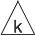

Explorable Abstraction
Sean McDirmid, May 2019
Programmers basically write code blind: they can only imagine in their heads what their code will do before running it. Live programming can reduce such blindness by executing and visualizing a live example while code editing occurs. Unfortunately, live examples are often too concrete to convey much about general program behavior, and are too detailed to be processed in situ while writing code. At best, the programmer can do a bit of debugging while writing code; at worst they hide or ignore live examples as too distracting.
For computers to help programmers see what they are doing, they must show them an image that is much closer to the "image" in their heads. Such an image is necessarily abstract in that it compresses details irrelevant to solving the problem. Consider an example of writing code to do red-black (RB) tree insertion:
The left part of this figure uses a concrete example of how a tree is rebalanced using a rotation and
recoloring after a red "7" node is added as a child to "6" via binary insert.
Much of the concrete RB tree is not involved in the rotation, and in fact, only the "1", "6", and "7" nodes
need to be manipulated.
Additionally, the topology of these nodes with respect to each other is not relevant, as long as they match
from "1" to "7" in the left image so a rotation is possible.
The right part of the figure shows an abstract image that can suitably stand in for the concrete examples at
the top of the image: the G node is bound to the "1" node, P to "6", and
N to "7".
Other parts of the tree are "compressed" as triangles that represent RB sub-trees, along with the exact
left-right topology of the path from G to N The use of
ùõº to parameterize tree topology is talked about in the next section..
Relative black height relationships are tracked (related to k) so that is known that the
transformed image (bottom right) can be compressed into one proper red-black tree.
Abstract images can provide programmers with sufficient feedback about what their code is doing. In fact, perhaps they can skip writing code and just manipulate these images instead, leading to an interesting experience where the programmer appears to be "exploring" the abstraction. The rest of this shows how such an explorable abstraction experience can be realized for RB trees, with an eye out for how this approach could generalize to other domains.
Notation
We refer to a representation of program state as an image and the ellision of its details as compression. An image must contain enough details so that each transformation meaningfully changes it, while other details that are not useful to whatever logic is being implemented should be compressed.
Notations for explorable abstractions are domain specific, and are based on the properties that need to be visible during manipulation. A well formed red-black (RB) trees have the following properties that need to be accounted for in their compression:
- An RB tree must be rooted and leafed by black colored nodes.
- A red node cannot be the parent of another red node.
- All paths in a RB tree from root to leaf must have the same number of black nodes (aka black height).
A triangle with a black dot on top () is a fully compressed RB tree whose internal structure follows the above requirements. Parts of a compressed RB tree must be expanded before they can be manipulated; e.g. consider the state of an RB tree just after a binary insert:
This image involves three compressed RB trees: one as a parent for a red N nodeThe little filled dot inside the node's circle indicates whether it is red or
black., and two as its children.
Because this RB tree has expanded parts, black heights must be tracked so that compression can re-occur
after reblancing; here the black heights for the leaves are one, meaning they are empty as nil children
counting as black nodes as per the typical RB tree approach.
The parent of N also has a black height of one, which here indicates the black height of
N's sibling (if any).
However compression is prevented becaues N is red and we do not know if its parent is a black
node; likewise turning N black will add to black height and also prevent compression.
Note that black height exists as a concept in various RB tree imagry, but need not actually exist as a value in its concrete representation as long as no operations need to test its dynamic value. In this case, the only thing that needs to be known at run-time about black height is emptiness, which can be otherwise gleaned from a simple Nil test. We can further generalize on black height with variables that indicate shared black height relationships, e.g.
This image specifies that all compressed leaf trees have the same black height of k, while the
compressed leaf tree specifies that the P node has a sibling with black height of one greater
than kThe right child of P is a compressed RB sub-tree
whose lack a black dot at top means it can be rooted by a red node..
This image also keeps open (with the * under N) whether N is on the
left or right of P. If the concrete node bound to N happens to be on the right of
the concrete node bound to P, then whatever is bound to its compressed sibling will be on the
left.
By parameterizing this axis, the image can represent trees no matter how N is parented
by P, a detail that is not needed for many kinds of manipulations.
However, many kinds of operations, such as rotation, need to know if the axes of two nodes are at least the
same; consider:
In the left image, the axes of both G and P are bound to the ùõº
variable, meaning they are the same: either P is to the left of G and
N is to the left of P, or P is to the right of G and
N is to the right of P.
In either case, rotation of P up into G's location transmutes to the same right
image.
At the same time, P and G are recolored and, because P's black height
is k + 1, the entire RB tree is compressible.
Transmutations
Transmutation is used here to describe a discrete action that transforms an image into one or many other images. A program then consists of a bunch of image transformations, where control flow simply invokes pre-existing transmutations given similar input images. Transmutations come in three forms:
- Mutating transmutations actually mutate program state as well as changing an image's form; e.g. rotation and flipping node color;
- Expansion transmuations decompresses the image into multiple cases that can be represented by a compression; e.g. the compressed parent of a node can be black, red with an added black grand parent, or empty; and
- Compression transmuations that change an image's form without changing program state or branching; e.g. compressing nodes into RB trees and generalizing its black-height to a variable.
Basically, mutations write program state, expansions read program state, and compressions make the image more general (ie less detailed). Only two mutating transmutations are used to express RB tree insertion beyond the initial binary tree insertion. Node rotation moves a child node up to its parent's position and make that parent its child while preserving the trees ordering properties. Another operation is needed to "flip" the color of a node between red and black during balancing.
Expansions
Expansions extract out the compressed details of an image with generated code that classifies concrete program state at run-time. Three different expansions are needed to express RB tree insertion. First, the compressed parent of a node can be expanded into three cases:
For the original compressed tree that roots (a) by being a parent of node N, (b) indicates that
N's parent is empty (N is itself root), (c) indicates that the parent
P of N is a black, and (d) indicates that the parent P of
N is red, meaning that P itself must be parented by a red grandparent
G.
The sibling black height specified in the compressed parent tree is added to in each non-empty case
depending since revealing a black node means that a potential sibling also has one more black height.
Also, in the last two cases, the child that N is of P is left open using
* under P, which is repeated in case (d) where a grandparent is also revealed.
Finally, according to RB tree invariants, whenever an expansion reveals a red node, we know that its
exapanded child must be empty or rooted by a black node, while a revealed black node need not be (no black
dot at the top of the expanded child).
Second, compressed leaf trees undergo an expansion analogous to compressed parent trees in revealing a root
node.
However, there is a different between compressed RB trees must be rooted by a black node if they are not
empty () and those that are
not ().
The latter () expands into
either the former or a red
node whose two children are each a .
The former () can be empty,
meaning it expands out to a ,
which is necessarily empty.
If the original compressed leaf had a variable expression to describe its black height, this expression is
equated to one and the variable is replaced throughout the entire tree; if the expression cannot be equated
to one, then the compressed leaf cannot be empty.
Otherwise, a compressed leaf can expand out to a black node with two open leaf trees of one less black
height than the original (e.g. k - 1 for an original ).
Third, topology variables that parameterize whether a node is the left or right child of a node can be compared to each leading to cases where they are the same or are different as shown:
In this example, the parameterized topologies of G and P from (a) are compared to
yield same case (b) or opposite case (c).
Known topology correspondance then allows rotations to occur without having to know what the concrete
topoligies actually are.
Compressions
Non-expansion control flow can only happen reliably between similar images so that shared image transformations remain valid; e.g. routines should return one image even if they have multiple return points, cases should break at the same image, and a loop can only be continued if it ends in the same image as its head. Compressions simply eliminate details to change the image into a form that makes images obviously similar. Only two compressions are needed to do RB insert. The first compression simply reassigns specific black heights into parameterized ones; e.g.
The reason this must be done in the implementation of RB insert is because rebalancing actually requires
looping with a red node with an increasing black height of k for its siblings and leaves.
Next consider:
This example demonstrates the second compression needed for RB insert: the compression of a node into a RB
tree.
Both the P and U nodes are the roots of valid RB trees of height
k + 1, and so they can be compressed.
The resulting image then has G with two compressed k + 1 trees as children.
This image in turn matches the right one of the previous example, allowing for a loop where k
becomes k + 1 and N becomes G.
Programmer Experience
Given an abstract notation for images and well-defined transmutations over those images, programmers by directly transmutating images rather than writing code. Put it all together with programmer interface. Transformations are performed direclty on the (visual) notation, control flow (goto) when states match. "Flow". Link to video and actual demos.
Discussion
Limitation. Oppurtunities. Future work.
In the movie Iron Man, the protagnist uses a 3D holographic environment to fluidly design his power suit. Designing things with an augmented experience (Iron Man 2008). The protaginist could rapidly explore the design of the artifact being designed, gaining immediate feedback as discrete changes were made over the artifact's representation. Such interaction reduces the mental burden on the designer since they need imagine (via mental simulation) less what their changes are actually doing. In my opinion, this was the best part of the film, better than any of its action segments: this movie was really about augmented crafting!
Live programming attempts to bring this kind of tight feedback loop to the task of programming with live example execution while code is being edited. This allows programmers to see what their code is doing as soon as they write it, with the idea that such feedback will reinforce their mental model about the program's behavior. Unfortunately, such live examples are usually incomplete, not covering all possible cases in the code. Live examples are also often too detailed given the task at hand, taxing the programmer mentally while they are writing code. Consider applying insertion into a example concrete red-black tree:


In the first tree, "7" is added as a red node via normal binary tree insert,which is then transformed by rebalancing code into the second tree by rotating up the "7" node and recoloring the "1" and "6" nodes. Seeing this example update live when writing code is actually not that useful to the programmer. First, the example is not very general: it does not cover other rotation cases or cases that do not involve rotation. Second, it is way too detailed, many of the nodes are not involved in the update and the not all specific node details, like values, are not of interest to the logic being implemented. At best, the programmer can debug a bit while they write code; at worst they are distracted from the abstract thinking needed for a general solution and are better off hiding it.
So that feedback is useful as well as immediate, programmers need something to look at while programming that is more general and abstract. So rather than look at the above concrete red-black trees, programmers could look at abstract images of red-black trees instead:
These two abstract red-black tree images are analogous to concrete red-black trees above, where
G is the "1" node, P is the "6" node, and N the inserted "7" node;
all other nodes are hidden under triangles that represent well formed sub-trees.
Even though "7" is to the right of "6" and "6" is to the right of "1" in the first concrete example, the
"ùõº" axis variable abstracts this detail away so that the only restriction is that P is on the
same side of G as N is to P.
Finally, a rotation and node color swaps occurs directly over this abstract representation, providing
feedback to the programmer that the entire tree is now well formed.
These images are abstract representations of possible program states, exposing only details needed for the task at hand. Rather than write code to manipulate these images indirectly, programmers can instead transmutate the images directly, where such transmutation corresponds to general code because the images are abstract. In this sense, programmers can explore programming problems through manipulation like they might explore a Rubik's Cube by moving it around. The rest of this essay explores the mechanics and merits of this explorable abstraction approach.
Consider a list of numbers:
[31, 98, 13, 57, 91, 20, 2, 63]
If the goal is to partition this list based on its first value (31) as a pivot, this image can be compressed by replacing specific numbers with either A (≤ 31) or B (> 31):
[A, B, A, B, B, A, A, B]
Since a specific sequence of As and Bs is also too specific, the image can be further compressed using a
disjunction operator and a regex-like kleene star
operator * so that the image is now (A|B)*, which matches any list of numbers.
The image (A|B)* can then be transmutedWe talk about transmutation in
the next section. into A*B*, so the As and Bs would have been rearranged into
[A, A, A, A, B, B, B, B] and the original list of numbers becomes
[31, 13, 20, 2, 98, 57, 91, 63].